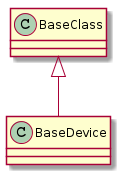

The Abstract Base for devices
class BaseDeviceEnum(object):
__slots__ = ()
tpc = "tpc"
node = "node"
# end class BaseDeviceEnum
CSV_OUTPUT = "{ssid},{bssid},{channel},{ip},{mac},{rssi},{noise}\n"
HUMAN_OUTPUT = """
SSID = {ssid}
BSSID = {bssid}
Channel = {channel}
IP Address = {ip}
MAC Address = {mac}
RSSI = {rssi}
Noise = {noise}
"""

BaseDevice([connection, interface, address, ...]) |
An abstract base class for devices | ||
BaseDevice.connection |
|
||
BaseDevice.bitrate |
|
||
BaseDevice.disable_wifi() |
Disable the WiFi Radio | ||
BaseDevice.enable_wifi() |
Enable the WiFi radio. | ||
BaseDevice.wifi_info |
|
||
BaseDevice.address |
|
||
BaseDevice.ssid |
|
||
BaseDevice.bssid |
|
||
BaseDevice.channel |
|
||
BaseDevice.noise |
|
||
BaseDevice.mac_address |
|
||
BaseDevice.rssi |
|
||
BaseDevice.log(message) |
Send a message to the device’s log. | ||
BaseDevice.poll() |
|
||
BaseDevice.__str__() |